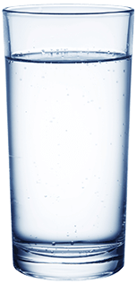
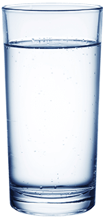
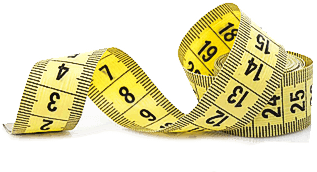

Keto Black
Per la prima volta in Italia
È IL MODO IN CUI NON HAI ANCORA FATTO LA PERDITA DI PESO
morire di fame non è più necessario


L'obiettivo principale della dieta cheto è limitare l'assunzione di carboidrati al fine di riportare il corpo in uno stato di chetosi dopo 7-10 giorni. La chetosi è uno stato metabolico in cui, anziché i carboidrati, il corpo inizia a utilizzare i grassi e i chetoni come combustibile.
Corpo spende più calorie digerire grassi invece di carboidrati - e quindi il peso scompare più velocemente. Anche i depositi di grasso stagnante iniziano a bruciare.
Allo stesso tempo, ci sono abbastanza proteine nella dieta e non ti senti così affamato, come nel caso di altre diete.


 
 Consumare grassi come energia il corpo non inizia immediatamente. Di solito ci vogliono dai 4 ai 10 giorni. Solo un apporto moderato di carboidrati e uno stile di vita attivo possono garantire un rapido avvio della chetosi.
Ora Keto Black consente al corpo di passare alla modalità chetosi quasi immediatamente, riducendo il tempo a 45 minuti. Già dopo la prima assunzione, inizia l'elaborazione dei depositi di grasso. Nel corso del tempo, la digestione migliora, il metabolismo accelera e le tossine e le scorie vengono eliminate.
Prendi il prodotto rigorosamente secondo le istruzioni per portare il tuo corpo in una forma perfetta.


La cosa più difficile nel perdere peso è bruciare il grasso sottocutaneo, poiché il corpo preferisce i carboidrati. È grasso sottocutaneo che non consente di vedere il risultato sulla bilancia.
Grazie alla dieta cheto, il corpo ha solo una fonte di energia: i chetoni, che si formano a seguito della distruzione dei grassi. Tuttavia, per raggiungere lo stato di chetosi, è necessario innanzitutto utilizzare le riserve di glicogeno nel fegato e nei tessuti muscolari. Di solito ci vogliono dai 4 ai 10 giorni.
Quando i miei pazienti vogliono accelerare questo processo o vogliono perdere peso in modo rapido e sicuro, raccomando loro Keto Black.
Questo strumento avvia la combustione dei grassi nei primi 45 minuti dopo l'assunzione. Accelera il metabolismo, supporta il sistema immunitario. Inoltre - il paziente non ha fame, non è attratto da dolci e cibo dannoso.
PRIMA DEL CORSO: livello di chetoni: 0.8 mole

DOPO IL CORSO Keto Black: CHETONI: 13 MOLES
La paziente è arrivata da me in un peso record per se stessa - 91 kg. Prima di questo Angelina ha cercato di perdere peso con il digiuno e diete diverse, ma danno risultati solo a breve termine - il peso che ha perso è tornato in quantità raddoppiata.
Quando abbiamo fatto i test, si è scoperto che il suo corpo aveva una quantità estremamente bassa di chetoni: questa era la ragione del rapido aumento di peso. Le ho assegnato Keto Black.
NUMERO DI CHETONI NELL'ORGANISMO INFLUISCE DIRETTAMENTE SUL PESO. PIÙ CHETONI-MENO PROBABILITÀ DI OBESITÀ.


POSSO FARE UNA MEDICINA PER I VEGETARI?
Nascondi rispostaIL RIMEDIO Keto Black INFLUISCE SULLO SFONDO ORMONALE?
Apri rispostaPER QUANTO TEMPO È SICURO SEGUIRE UNA DIETA CHETO E PRENDERE Keto Black?
Apri rispostaPOSSO SOLO PRENDERE Keto Black E PERDERE PESO?
Apri risposta
